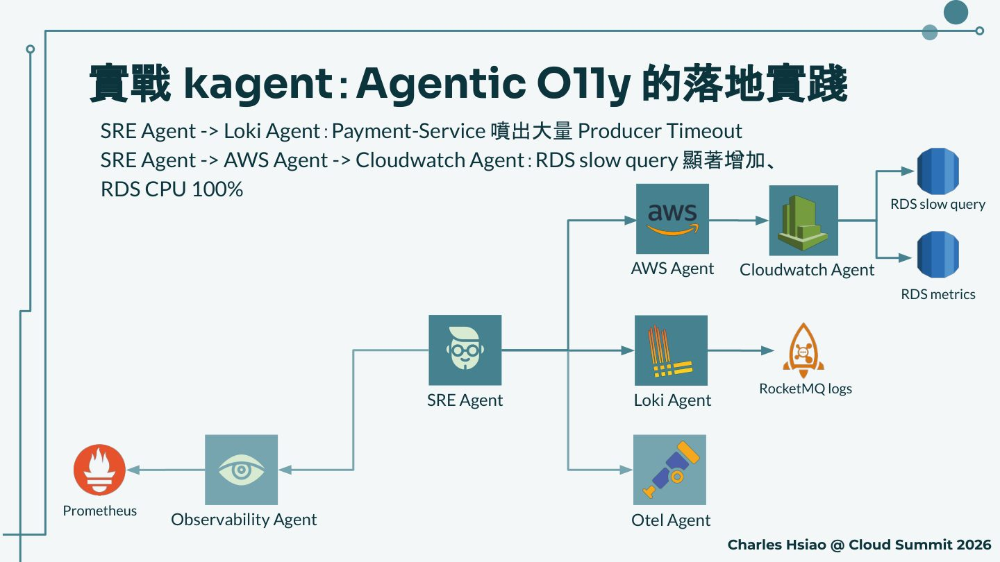
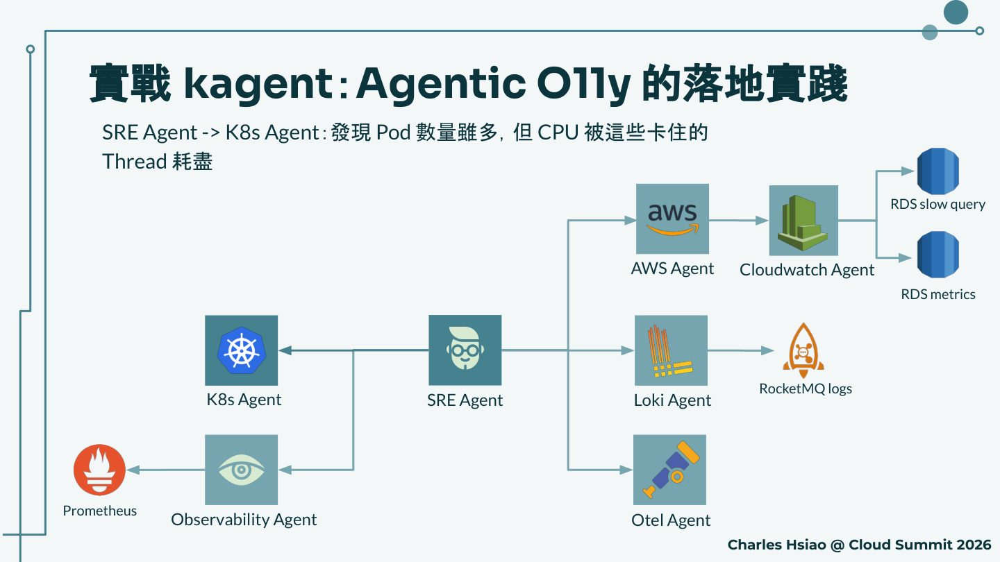
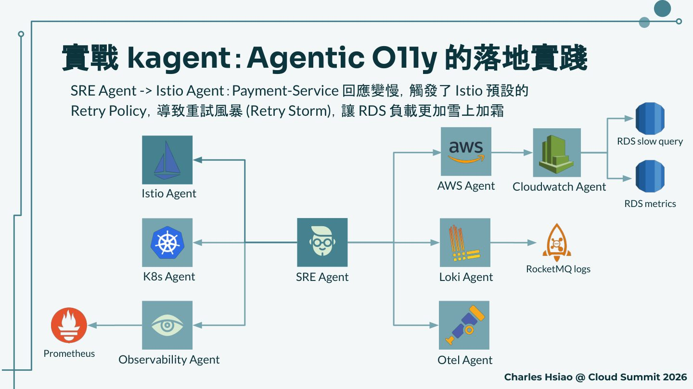
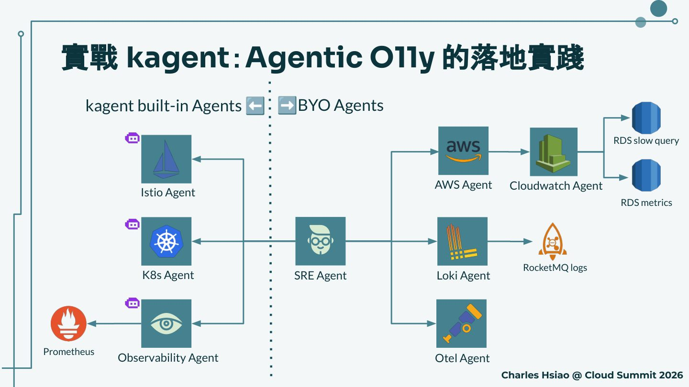

摘要
本場演講由 MaiCoin Group SRE Charles Hsiao 主講，介紹如何運用開源專案 kagent 搭配 Google 提出的 A2A（Agent-to-Agent）協議，在 Kubernetes 環境中構築多代理自主協作生態系。內容涵蓋雲原生維運從命令式、宣告式、自動化到自主化的演進路徑，深入剖析 A2A 協議的 Agent Card、Task、Message、Artifact 等核心概念，並以實際的 Agentic SRE 案例展示多 Agent 協作如何找出隱藏在告警表象之下的真正根因。
重點整理
- Gartner 預測 2026 年底企業應用程式將有 40% 整合 task-specific AI Agent（目前不到 5%），2035 年 AI Agent 將推動企業應用軟體 30% 的營收成長
- 多代理系統相較單一 Agent，在微服務根因分析（RCA）準確度上可從 39.8% 提升至 91.3%，可執行建議率從 1.7% 提升至 100%
- A2A 協議由 Google 於 2025 年 4 月公開並貢獻給 Linux 基金會，作為推動 AI Agent 互通性的開放標準
- kagent 是一個 Cloud Native Agentic AI 的 sandbox project，讓使用者能以 K8s CR 定義、編排並擴充多個 Agent，並整合 A2A 與 MCP 工具
- 透過實際的 Agentic O11y 案例展示，SRE Agent 串聯 Observability、Otel、Loki、AWS、K8s、Istio 等多個 Agent，最終從表面的 Pod 阻塞現象追溯到真正根因是 RDS 資料庫負載與 Istio 重試風暴
重點圖片／架構圖




雲原生維運的演進與 A2A 驅動的未來
演講首先描繪雲原生維運從命令式（手動下指令、執行 Scripts）、宣告式（K8s YAML、GitOps）、自動化（事件驅動自動化、Operator 模式）到自主化（AIOps、Agentic Workflow）的演進路徑，人類參與程度逐漸降低。並引用 Gartner 預測，2026 年底企業應用程式將有 40% 整合 task-specific AI Agent，2035 年 AI Agent 將推動企業應用軟體 30%（4500 億美元）的營收成長。
AI Agent 的巴別塔困境與 A2A 協議
現狀挑戰在於生態系碎片化：各家框架（LangChain、CrewAI、AutoGPT）通訊協議不一，模型廠商接口標準各自為政，每增加一個 Agent 或工具都需撰寫專屬 Adapter，形成「M x N 整合陷阱」，Agent 間如同孤島無法跨組織協作。Google 於 2025 年 4 月正式公開 A2A（Agent-to-Agent）協定並貢獻給 Linux 基金會，提供統一的身份驗證、權限授權與通訊加密標準，讓不同開發者、不同模型驅動的 AI Agent 能直接對話，無需為每個 Agent 撰寫專用對接代碼。演講也引用研究數據，指出多代理系統在微服務根因分析準確度上可從 39.8% 大幅提升至 91.3%，可執行建議率從 1.7% 提升至 100%。
A2A 協議核心概念與任務狀態機
A2A 協議的核心是 Agent Card——一份描述 Agent 身分、能力、端點與安全需求的 JSON 文件（放置於 /.well-known/agent-card.json），包含 name、version、description、provider、skills、interfaces 等欄位，讓其他 Agent 能「找到我」並知道「我能做什麼」。任務執行則圍繞 task（Agent 的工單）、messages（Agent 間交換意圖與結果的對話載體）、artifacts（任務執行過程或結束後產生的實體）與 parts（構成 message 與 artifact 的基本單位）四層結構展開，並透過 submitted、working、input-required、completed、canceled、failed 等狀態的有限狀態機（FSM），將不可預測的 AI 行為包裝進可預測的工程框架。
kagent：Cloud Native Agentic AI 與實戰案例
kagent 是一個 Cloud Native Agentic AI 的 sandbox project，其特點是以 Agent-based 方式取代 Scripts、用 K8s CR 定義、整合 A2A 與 MCP 工具、支援主流與本地 LLM，並具備開箱即用的可觀測性。演講以實際案例展示：使用者反應網站結帳介面極慢，SRE Agent 依序調用 Observability Agent（發現 Prometheus P99 Latency 上升）、Otel Agent（發現下游 DB 與 MQ 延遲增加）、Loki Agent 與 AWS/Cloudwatch Agent（發現 Producer Timeout 與 RDS slow query、CPU 100%）、K8s Agent（發現 Pod CPU 被卡住的 Thread 耗盡）、Istio Agent（發現預設 Retry Policy 觸發重試風暴，讓 RDS 負載雪上加霜），最終透過跨 Agent 協作找出資料庫才是真正的 Root cause，而非表面症狀。
人機協作、可觀察性與未來展望
kagent 支援打造專屬 AI Agent 的四個步驟：透過 System Prompt 定義角色靈魂、透過自定義 Skills 賦予能力、整合專案文件建立專業知識庫、以及在涉及寫入刪除等敏感操作時加入 Human-in-the-Loop（HITL）機制，包括「詢問使用者」與「工具審核」（requireApproval 欄位）兩種模式確保人類把關。可觀察性方面，kagent 與 A2A 透過標準 OTLP 格式導出、Trace ID 串聯跨 Agent 調用鏈路，將「黑盒」轉為「玻璃盒」。展望未來，演講提出 Agent Registry（Agent Docker Hub）、Agent as a Service（AaaS）、結合 x402/AP2/MPP 協議的 Agentic Payment，以及 AI Reliability Engineering（AIRE）等成熟 Agent 時代的發展方向。